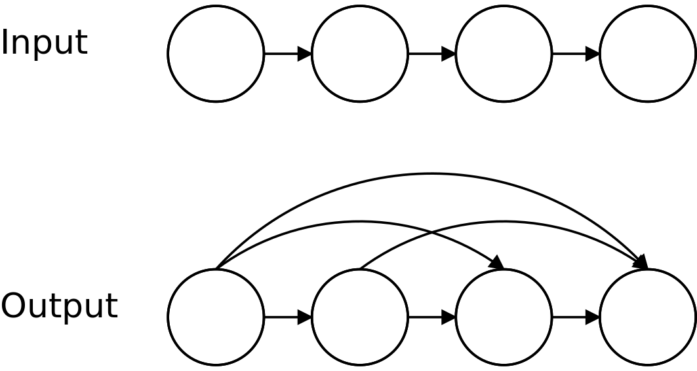

Transitive Closure Datalog C#¶
Getting started¶
The framework is released as DLL file to be used on a Desktop platform, therefore it can be easily imported and used in any C# project.
The framework needs ANTLR4 library for its operation.
Using EmbASP¶
In the following, we describe an actual usage of the framework by means of a running example; as a use case, we will develop a simple Desktop application to compute the transitive closure of a graph.
The complete code of this example is freely available here.
We will make use of the annotation-guided mapping, in order to create CSharp object constituting Datalog predicates.
To this purpose, the following classes are intended to represent possible predicates that a Datalog program can use:
[Id("path")]
class UnweightedPath
{
[Param(0)]
private int from;
[Param(1)]
private int to;
public UnweightedPath()
{
this.from = 0;
this.to = 0;
}
public UnweightedPath(int from, int to)
{
this.from = from;
this.to = to;
}
[...]
[Id("edge")]
class UnweightedEdge
{
[Param(0)]
private int from;
[Param(1)]
private int to;
public UnweightedEdge()
{
this.from = 0;
this.to = 0;
}
public UnweightedEdge(int from, int to)
{
this.from = from;
this.to = to;
}
[...]
}
At this point, supposing that we have embedded the IDLV Datalog engine in this project, we can start deploying our application:
public class TransitiveClosure
{
[TestMethod]
public void TransitiveClosureTest()
{
try
{
DesktopHandler handler = new DesktopHandler(new IDLVDesktopService("executables/idlv"));
DatalogMapper.Instance.RegisterClass(typeof(UnweightedPath));
InputProgram input = new DatalogInputProgram();
input.AddObjectInput(new UnweightedEdge(1,2));
input.AddObjectInput(new UnweightedEdge(2,3));
input.AddObjectInput(new UnweightedEdge(2,4));
input.AddObjectInput(new UnweightedEdge(3,5));
input.AddObjectInput(new UnweightedEdge(3,6));
input.AddProgram("path(X,Y) :- edge(X,Y).");
input.AddProgram("path(X,Y) :- path(X,Z), path(Z,Y).");
handler.AddProgram(input);
IDLVMinimalModels minimalModels = (IDLVMinimalModels)handler.StartSync();
foreach (MinimalModel m in minimalModels.Minimalmodels)
{
foreach (object a in m.Atoms)
{
if (typeof(UnweightedPath).IsInstanceOfType(a))
{
Console.WriteLine(a);
}
}
}
}
catch (Exception e)
{
Console.WriteLine(e.ToString());
}
}
}
The main method contains an Handler instance, that is initialized with a DesktopHandler using the parameter IDLVDesktopService with a string representing the path to the IDLV local grounder.
The DatalogMapper registers the classes created before in order to manage the input and output objects.
A string and a list of Edge objects representing facts, rules and constraints of the Datalog program are added to an DatalogInputProgram, and the DatalogInputProgram is added to the Handler.
Finally the solver is invoked, and the output is retrieved.
In this example the Path predicates, represent all the arcs in the transitive closure of the starting graph. The output predicates can be managed accordingly to the user’s desiderata, as they are simply Objects.
For further information, contact embasp@mat.unical.it or visit our website.